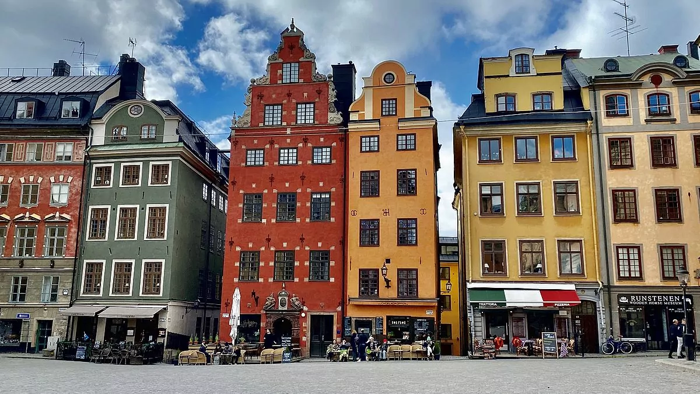

Stockholm is not only the capital of Sweden, but also the political and cultural center of the country. Many important buildings, museums, and universities are located in the city. It is a place where people work, study, and create new ideas.
Royal Family
Stockholm is also home to Sweden’s royal family. The current king is Carl XVI Gustaf and the queen is Queen Silvia. They live at the Royal Palace in central Stockholm, where official ceremonies and events often take place and it has over 600 rooms. Many tourists enjoy seeing parts of the palace and learning about the history of the Swedish monarchy.
Old Town: Gamla Stan
Gamla Stan is the old town of Stockholm and one of the best preserved medieval city centers in Europe. It has narrow streets, colorful buildings, and many small shops and cafes. The area is very popular with both tourists and local people. In Gamla Stan, you can visit historic places such as Stortorget and Stockholm Cathedral. Many people enjoy walking through the streets, taking photos, and learning about the city’s history. It is one of the most important and beautiful parts of Stockholm.
Museums and Culture
Stockholm has a rich cultural life and is home to many important museums and cultural institutions. One of the most famous is the Vasa Museum, which displays a well-preserved warship from the 1600s that sank on its first voyage. Visitors can learn about Swedish history, shipbuilding, and life in the past through exhibitions and guided tours. Another popular attraction is the ABBA Museum, which tells the story of the world-famous Swedish pop group. Here, visitors can see costumes, instruments, and recordings, and even try interactive activities. The museum is very popular with both tourists and music fans from around the world. Stockholm also has many art museums and theaters, such as Moderna Museet and the Royal Dramatic Theatre. These places show modern art, classic plays, and new performances by Swedish and international artists. Culture is an important part of everyday life in Stockholm, and many people enjoy visiting museums, concerts, and exhibitions in their free time.
Nature
Stockholm is built on 14 islands and is connected by about 57 bridges. Water is an important part of the city, and around one third of Stockholm is made up of water. Lakes, canals, and the sea are always close, no matter where you are in the city. Because of its many bridges and waterways, Stockholm is sometimes called "The Venice of the North." Boats and ferries are common ways to travel between different parts of the city.